原文连接:https://www.cnblogs.com/yifchan/p/python-1-37.html
性能优化原理：
当我们要给client浏览器返回一个页面时，我们需要去数据库查询数据并将数据和基本页面模板渲染形成页面返回给客户端，但如果每一个用户访问时都去查询一次首页的的数据时，当日访问量很大时那么无疑会给数据库查询带来很大的性能问题。为了解决这个问题，我们可以给未登录用户返回一个早就渲染好的静态首页(给已登录的用户返回一个调用缓存数据和个人数据渲染的页面)，这样就可以提高网站的性能了。
使用celery生成静态首页
生成静态页面原理：
在一个为静态首页准备的基础模板之上，获取数据，使用django的loader加载基础模板，使用render渲染页面即可生成几台页面。
安装celery
pip install celery为redis配置settings文件
# diango的缓存配置
CACHES = {
"default": {
"BACKEND": "django_redis.cache.RedisCache",
"LOCATION": "redis://127.0.0.1:6379/9",
"OPTIONS": {
"CLIENT_CLASS": "django_redis.client.DefaultClient",
}
}
}准备一个首页静态模板文件static_base.html


{# 首页 注册 登录 #}
<!DOCTYPE html PUBLIC "-//W3C//DTD XHTML 1.0 Transitional//EN" "http://www.w3.org/TR/xhtml1/DTD/xhtml1-transitional.dtd">
<html xmlns="http://www.w3.org/1999/xhtml" xml:lang="en">
{% load staticfiles %}
<head>
<meta http-equiv="Content-Type" content="text/html;charset=UTF-8">
{# 网页标题内容块 #}
<title>{% block title %}{% endblock title %}</title>
<link rel="stylesheet" type="text/css" href="{% static 'css/reset.css' %}">
<link rel="stylesheet" type="text/css" href="{% static 'css/main.css' %}">
{# 网页顶部引入文件块 #}
{% block topfiles %}{% endblock topfiles %}
</head>
<body>
{# 网页顶部欢迎信息块 #}
{% block header_con %}
<div class="header_con">
<div class="header">
<div class="welcome fl">欢迎来到商城!</div>
<div class="fr">
<div class="login_btn fl">
<a href="{% url 'user:login' %}">登录</a>
<span>|</span>
<a href="{% url 'user:register' %}">注册</a>
</div>
<div class="user_link fl">
<span>|</span>
<a href="{% url 'user:user' %}">用户中心</a>
<span>|</span>
<a href="cart.html">我的购物车</a>
<span>|</span>
<a href="{% url 'user:order' %}">我的订单</a>
</div>
</div>
</div>
</div>
{% endblock header_con %}
{# 网页顶部搜索框块 #}
{% block search_bar %}
<div class="search_bar clearfix">
<a href="index.html" class="logo fl"><img src="{% static 'images/logo.png' %}"></a>
<div class="search_con fl">
<input type="text" class="input_text fl" name="" placeholder="搜索商品">
<input type="button" class="input_btn fr" name="" value="搜索">
</div>
<div class="guest_cart fr">
<a href="#" class="cart_name fl">我的购物车</a>
<div class="goods_count fl" id="show_count">{{ cart_count }}</div>
</div>
</div>
{% endblock search_bar %}
{# 网站主体内容块 #}
{% block body %}{% endblock body %}
<div class="footer">
<div class="foot_link">
<a href="#">关于我们</a>
<span>|</span>
<a href="#">联系我们</a>
<span>|</span>
<a href="#">招聘人才</a>
<span>|</span>
<a href="#">友情链接</a>
</div>
<p>CopyRight © 2016 北京商城信息技术有限公司 All Rights Reserved</p>
<p>电话：010-****888 京ICP备*******8号</p>
</div>
{# 网页底部html元素块 #}
{% block bottom %}{% endblock bottom %}
{# 网页底部引入文件块 #}
{% block bottomfiles %}{% endblock bottomfiles %}
</body>
</html>在首页静态模板文件的基础上继承生成一个首页静态文件 static_index.html 方便celery获取数据库文件并进行渲染
{% extends 'static_base.html' %}
{% load staticfiles %}
{% block title %}首页{% endblock title %}
{% block topfiles %}
<script type="text/javascript" src="{% static 'js/jquery-1.12.4.min.js' %}"></script>
<script type="text/javascript" src="{% static 'js/jquery-ui.min.js' %}"></script>
<script type="text/javascript" src="{% static 'js/slide.js' %}"></script>
{% endblock topfiles %}
{% block body %}
<div class="navbar_con">
<div class="navbar">
<h1 class="fl">全部商品分类</h1>
<ul class="navlist fl">
<li><a href="">首页</a></li>
<li class="interval">|</li>
<li><a href="">手机生鲜</a></li>
<li class="interval">|</li>
<li><a href="">抽奖</a></li>
</ul>
</div>
</div>
<div class="center_con clearfix">
<ul class="subnav fl">
{% for type in types %}
<li><a href="#model0{{ forloop.counter }}" class="{{ type.logo }}">{{ type.name }}</a></li>
{% endfor %}
</ul>
<div class="slide fl">
<ul class="slide_pics">
{% for banner in goods_banners %}
<li><a href="#"><img src="{{ banner.image.url }}" alt="幻灯片"></a></li>
{% endfor %}
</ul>
<div class="prev"></div>
<div class="next"></div>
<ul class="points"></ul>
</div>
<div class="adv fl">
{% for banner in promotion_banners %}
<a href="{{ banner.url }}"><img src="{{ banner.image.url }}"></a>
{% endfor %}
</div>
</div>
{% for type in types %}
<div class="list_model">
<div class="list_title clearfix">
<h3 class="fl" id="model0{{ forloop.counter }}">{{ type.name }}</h3>
<div class="subtitle fl">
<span>|</span>
{% for banner in type.title_banners %}
<a href="#">{{ banner.sku.name }}</a>
{% endfor %}
</div>
<a href="#" class="goods_more fr" id="fruit_more">查看更多 ></a>
</div>
<div class="goods_con clearfix">
<div class="goods_banner fl"><img src="{{ type.image.url }}"></div>
<ul class="goods_list fl">
{% for banner in type.image_banners %}
<li>
<h4><a href="#">{{ banner.sku.name }}</a></h4>
<a href="#"><img src="{{ banner.sku.image.url }}"></a>
<div class="prize">¥ {{ banner.sku.price }}</div>
</li>
{% endfor %}
</ul>
</div>
</div>
{% endfor %}
{% endblock body %}在项目下新建celery_tasks文件夹，在文件夹中新建tasks.py文件，编写tasks文件；
from django.conf import settings
from celery import Celery
from django.template import loader
# 在任务处理者一端加这几句
import os
# import django
# os.environ.setdefault("DJANGO_SETTINGS_MODULE", "shoppingmall.settings")
# django.setup()
# 这几个类要放在django环境初始化那四句的下面
from goods.models import GoodsType, IndexGoodsBanner, IndexPromotionBanner, IndexTypeGoodsBanner
# 创建一个Celery类的实例对象
app = Celery('celery_tasks.tasks', broker='redis://127.0.0.1:6379/8')
@app.task
def generate_static_index_html():
'''产生首页静态页面'''
# 获取商品的种类信息
types = GoodsType.objects.all()
# 获取首页轮播商品信息
goods_banners = IndexGoodsBanner.objects.all().order_by('index')
# 获取首页促销活动信息
promotion_banners = IndexPromotionBanner.objects.all().order_by('index')
# 获取首页分类商品展示信息
for type in types: # GoodsType
# 获取type种类首页分类商品的图片展示信息
image_banners = IndexTypeGoodsBanner.objects.filter(type=type, display_type=1).order_by('index')
# 获取type种类首页分类商品的文字展示信息
title_banners = IndexTypeGoodsBanner.objects.filter(type=type, display_type=0).order_by('index')
# 动态给type增加属性，分别保存首页分类商品的图片展示信息和文字展示信息
type.image_banners = image_banners
type.title_banners = title_banners
# 组织模板上下文
context = {
'types': types,
'goods_banners': goods_banners,
'promotion_banners': promotion_banners
}
# 使用模板
# 1.加载模板文件,返回模板对象
temp = loader.get_template('static_index.html')
# 2.模板渲染
static_index_html = temp.render(context)
# 生成首页对应静态文件
save_path = os.path.join(settings.BASE_DIR, 'static/index.html')
with open(save_path, 'w', encoding='utf-8') as f:
f.write(static_index_html)开启redis服务
E:\>cd E:\YifChanSoft\Database\Redis\RedisSoft\Redis-x64-3.2.100
E:\YifChanSoft\Database\Redis\RedisSoft\Redis-x64-3.2.100>redis-server --service-install redis.windows-service.conf --loglevel verbose
E:\YifChanSoft\Database\Redis\RedisSoft\Redis-x64-3.2.100>redis-cli
127.0.0.1:6379> select 8
OK
127.0.0.1:6379[8]> keys *
1) "_kombu.binding.celery"
2) "_kombu.binding.celery.pidbox"
127.0.0.1:6379[8]>开启redis服务截图
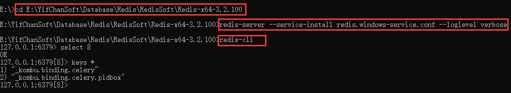
将项目代码拷贝一份放在某处，进入该处，启动tasks的worker模式，
注意，用作worker的代码的tasks文件中应该有提前启动django的初始化的代码，不然worker没法调用conf信息；
即应该有以下内容
# 在任务处理者一端加这几句
import os
import django
os.environ.setdefault("DJANGO_SETTINGS_MODULE", "shoppingmall.settings")
django.setup()为了解决celery4.x在win10上运行的错误，安装eventlet
pip install eventlet进入复制用来做celery工作者的项目代码所在处
开启worker模式
celery -A celery_tasks.tasks worker -l info -P eventlet开启worker模式截图
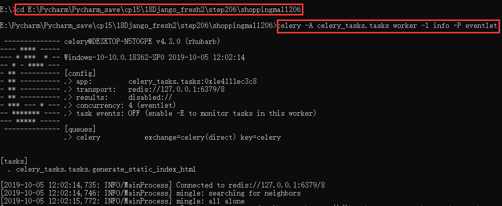
如果有就删除celery代码文件中static中的index.html文件；
主动调用 generate_static_index_html.delay() 即可验证生成index.html；
from celery_tasks.tasks import generate_static_index_html
generate_static_index_html.delay()验证截图
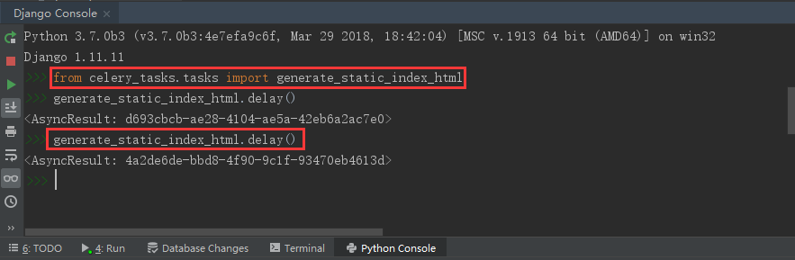
可以看到在项目下的static文件夹下生成了index.html；
开启项目在浏览器中输入 http://127.0.0.1:8888/static/index.html/ 即可看到生成的静态首页；因为数据库中还没有数据，所以页面比较空。
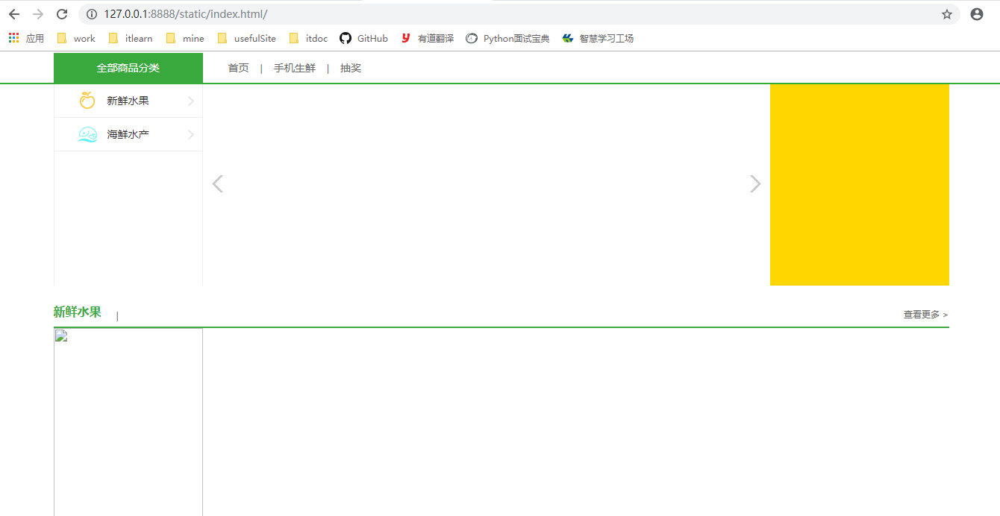
NGINX的安装
参考教程：https://blog.csdn.net/weixin_40151334/article/details/80681173
1.下载nginx：http://nginx.org/en/download.html
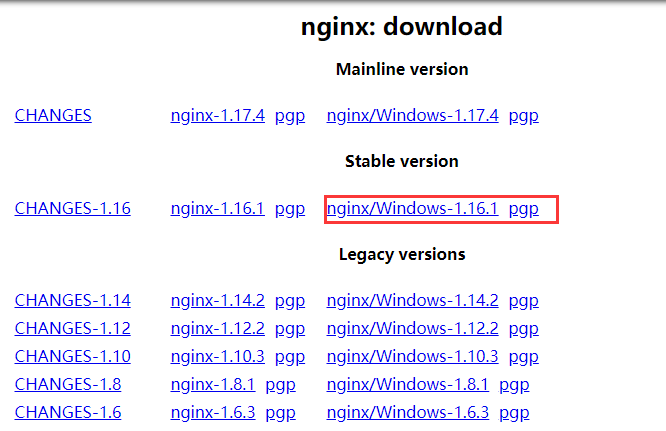
2.解压缩nginx包
下载好后在放入合适的目录，解压缩后如下
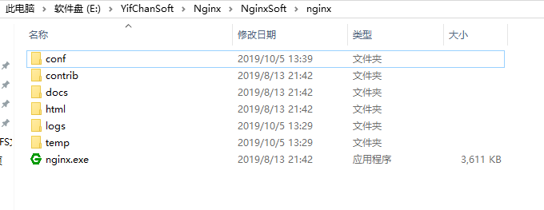
3.使用cmd命令，进入nginx所在解压缩目录，使用如下命令进行安装nginx；
start nginx.exe安装截图
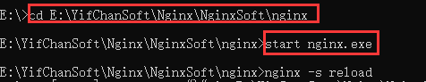
安装完成后，我们可以在 任务管理器中看到nginx任务，如图
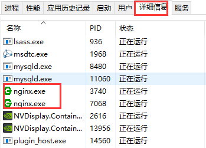
至此，nginx就算安装完成了。
nginx命令
start nginx.exe # 开启nginx
nginx -s reload # 重新启动
nginx -s stop # 停止nginx
nginx -s quit # 退出nginx
使用NGINX提供静态首页
修改nginx配置
找到nginx的配置文件，如下图所示，为了方便以后其他的项目使用，我们拷贝一份源文件重命名为nginx_origin.conf
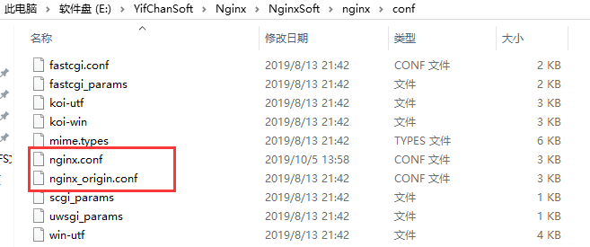
用编辑器打开 nginx.conf 文件，修改配置文件中内容如下：
location /static {
alias E:/Pycharm/Pycharm_save/cp15/18Django_fresh2/step206/shoppingmall206/static/;
}
location / {
# root html;
root E:/Pycharm/Pycharm_save/cp15/18Django_fresh2/step206/shoppingmall206/static/;
index index.html index.htm;
}配置截图
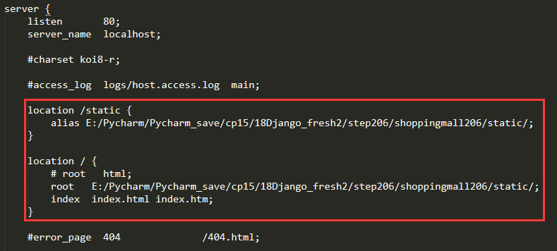
注意，其中的地址应该是你使用celery的项目所在的绝对路径地址，并且地址之间应该使用斜杠/而不是反斜杠\，否则会报错。
修改好配置保存后，我们使用一下命令进行nginx的重启
nginx -s reload然后，我们打开浏览器输入一下两个链接之一就可以看到项目主页面了。
http://127.0.0.1/ # 注意，后面必须有一个/，否则会进入nginx默认界面
http://127.0.0.1/static/index.html项目主页面截图
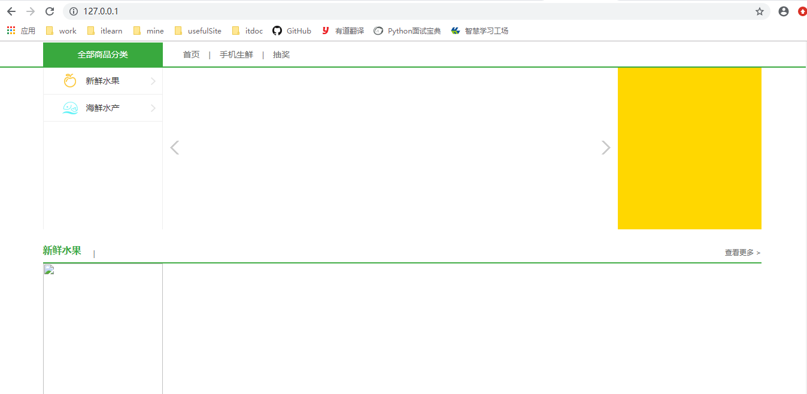
nginx的cmd命令截图，其中的报错都是因为使用的是win10目录自带的反斜杠
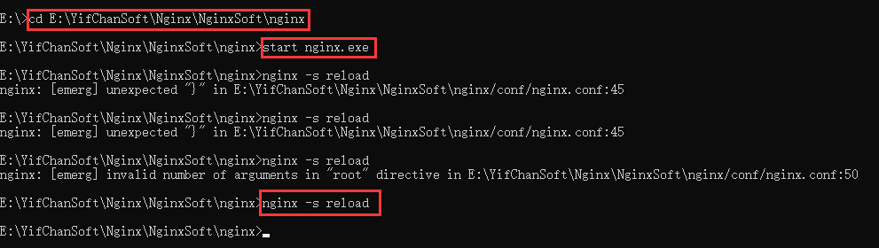
在Django网站和celery可以理解是并列的关系，在他们之前，其实还有一个nginx服务器负责调度；
一般是当用户直接访问127.0.0.1时，我们通过nginx调度去celery的nginx中返回静态页面；
而当用户访问127.0.0.1/index时，我们返回调用Django网站的IndexView；
在网站上线时我们会使用nginx对它们进行配置。
后台数据修改时重新生成静态页面
原理
在数据库的数据改变时，会调用admin.ModelAdmin下的sava_model和delete_model方法用来更新数据，而我们需要当数据改变后重新生成静态页面；
因此，我们可以自定义一个类继承admin.ModelAdmin，重写更新和删除数据的方法，调用父类的更新删除方法后，调用celery中的方法重新生成静态首页；
实现
我们要配置当某个表的数据改变时重新生成静态页面，就要给该表定义一个 xxxModelAdmin 类，继承自admin.ModelAdmin并重写其中的方法，并且在admin中注册时该表应该同时继承xxxModelAdmin 类；
因为有很多表都需要如此配置，且类中的代码都相同，所以我们可以抽出一个 BaseModelAdmin 类，编写更新后重新调用生成静态页面的代码，然后让各个需要修改的表继承该类即可。
在首页对应的应用中的admin.py文件中编写如下代码
from django.contrib import admin
# from django.core.cache import cache
from goods.models import GoodsType, GoodsSKU, Goods, GoodsImage, IndexGoodsBanner, IndexTypeGoodsBanner, IndexPromotionBanner
from celery_tasks.tasks import generate_static_index_html
class BaseModelAdmin(admin.ModelAdmin):
"""当后台数据库数据改动时使celery重新生成静态首页页面"""
def save_model(self, request, obj, form, change):
"""当更新或者新增数据时调用"""
super().save_model(request, obj, form, change)
# 发出任务，让celery worker重新生成静态首页
generate_static_index_html.delay()
# 清除首页的缓存数据
# cache.delete("index_page_data")
def delete_model(self, request, obj):
"""当删除数据时调用"""
super().delete_model(request, obj)
generate_static_index_html.delay()
# 清除首页的缓存数据
# cache.delete("index_page_data")
class GoodsTypeAdmin(BaseModelAdmin):
pass
class IndexGoodsBannerAdmin(BaseModelAdmin):
pass
class IndexTypeGoodsBannerAdmin(BaseModelAdmin):
pass
class IndexPromotionBannerAdmin(BaseModelAdmin):
pass
admin.site.register(GoodsType, GoodsTypeAdmin)
admin.site.register(GoodsSKU)
admin.site.register(Goods)
admin.site.register(GoodsImage)
admin.site.register(IndexGoodsBanner, IndexGoodsBannerAdmin)
admin.site.register(IndexTypeGoodsBanner, IndexTypeGoodsBannerAdmin)
admin.site.register(IndexPromotionBanner, IndexPromotionBannerAdmin)至此，当我们在admin后台更新数据时就会重新生成静态首页了，大家可以自行尝试一下~